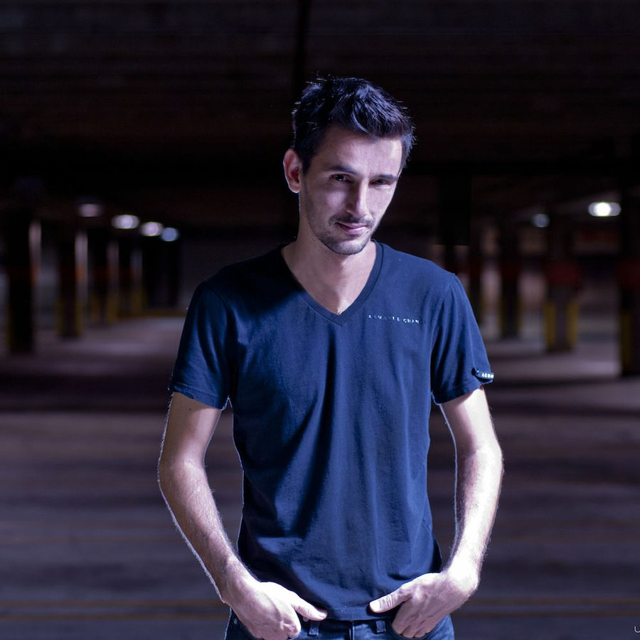

Richard Grey: Tainted house


French DJ/producer Richard Grey has been a fixture on his country’s house scene for over a decade now, and he’s worked as a remixer and producer with names as massive as Junior Jack, Armand Van Helden, Harry ´choo choo´ Romero, Ron Carroll, Paul Johnson, Robbie Rivera, Ralphi Rosario and the big man of house himself Erick Morillo.
But though he’s been around for a while, he’s been making waves in 2007 with his reworking of the 80s classic Tainted Love, which goes by the name of Warped Bass. It climbed to the #1 spot in the UK Pop Charts and Pete Tong himself named it as the ‘Track of Miami’ at the WMC earlier this year.
He’s in the country now to play a series of gigs for Famous, and ITM’s Angus Paterson caught up with him recently while he was in Brazil to find out what we can expect when he takes to the decks.
So how’s it going Richard?
I’m OK! I’m in Brazil at the moment and I’ve been here for one week, I’m here to play a series of gig for Pacha. And then I’ve got 15 hours on the plane to go to Ibiza and then another 28 hours to go to Perth. I’m going to become the ‘flight man’!
So has all this hectic touring been taking it out of you?
A little bit, yes! Definitely.
We’ve just hit the second half of the year, and it looks like you’ve been pretty busy so far. What have you been up to this year?
I’ve just finished up a remix for Shakira which was really, really good to do because she is a really amazing vocal talent, so when they asked me to do the remix I was really glad. At the moment it’s #1 in the UK so *I’m even more glad that I’ve done the remix.
This year you’ve been getting a lot of attention for your take on the 80s classic Tainted Love. Have you found that this tune has exposed you to a larger audience?
Definitely yes. Because before I was doing the more underground stuff for Subliminal Records and other such labels, which got me exposed to the underground fans of course but not to such a massive amount of people like I am now. But I didn’t expect that Warped Bass would be so big! In the beginning I was just doing an instrumental track and then I thought I would place elements of Tainted Love in there. Next thing you know it’s getting played all over the UK and picked up by Pete Tong and a lot of other big DJs. Then Universal in the UK picked up the license so I was able to do an official cover with the original vocals.
Have you got any other big remakes planned?
Yes! We just got approval from the Bob Marley family to use the vocals from I Shot the Sheriff only just two weeks ago, so that’s really good.
So what are you enjoying the most at the moment, the remakes and remixes or your own production?
I enjoy both, but I like to keep it an equal mixture between the two and still keep some of my solo work and collaborations coming out.
So what are you playing at the moment? Is your sound tied to the more classic house sounds, or are you enjoying the electro sounds?
I’m really enjoying the electro house sound. The Swedish guys, a lot of really good bootlegs are out there at the moment as well. I’m finding that the tastes of crowds around the world are quite universal – what makes a big impact in Ibiza is also a really big hit in Brazil, for instance!
So this is your first visit to Australia coming up?
Yes, I’m looking forward to the 28 hour plane flight! I’ll be in the country for 15 days and everyone has told me that I’ll have a fantastic time so I’m really looking forward to it. All my friends told me that it’s a great country for electronic music.
Pacha: mixed by Sam La More, Richard Grey & Soul Avengerz is in the stores this weekend. You can see Richard Grey playing at the following dates…
24th Aug – Perth, Metro
25th Aug – Melbourne, Famous
26th Aug – Gold Coast, Bedroom
30th Aug – Geelong, Club 4 Play
31st Aug – Brisbane, The Met
1st Sep – Sydney, Home
If you’d like to see the smokin’ hot film clip for ‘Warped Bass’ then head to ITM-TV HERE as we’ve got it streaming for your viewing pleasure right now. Be sure to also download our ‘Ibiza Special Edition’ podcast HERE, where we feature the Dave Spoon ‘Lost In Rave’ remix of ‘Warped Bass’!